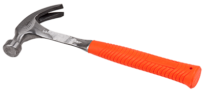

module.exports = function(grunt) {
grunt.initConfig({
pkg: grunt.file.readJSON('package.json'),
concat: {
options: {
separator: ';'
},
dist: {
src: ['src/**/*.js'],
dest: 'dist/<%= pkg.name %>.js'
}
},
uglify: {
options: {
banner: '/*! <%= pkg.name %> <%= grunt.template.today("dd-mm-yyyy") %> */\n'
},
dist: {
files: {
'dist/<%= pkg.name %>.min.js': ['<%= concat.dist.dest %>']
}
}
},
qunit: {
files: ['test/**/*.html']
},
jshint: {
files: ['Gruntfile.js', 'src/**/*.js', 'test/**/*.js']
},
watch: {
files: ['<%= jshint.files %>'],
tasks: ['jshint', 'qunit']
}
});
grunt.loadNpmTasks('grunt-contrib-uglify');
grunt.loadNpmTasks('grunt-contrib-jshint');
grunt.loadNpmTasks('grunt-contrib-qunit');
grunt.loadNpmTasks('grunt-contrib-watch');
grunt.loadNpmTasks('grunt-contrib-concat');
grunt.registerTask('test', ['jshint', 'qunit']);
grunt.registerTask('default', ['jshint', 'qunit', 'concat', 'uglify']);
};
var gulp = require('gulp');
var concat = require('gulp-concat');
var jshint = require('gulp-jshint');
var uglify = require('gulp-uglify');
var mocha = require('gulp-mocha');
gulp.task('default', ['test', 'scripts']);
gulp.task('scripts', function() {
gulp.src('./src/scripts/*.js')
.pipe(jshint()))
.pipe(jshint.reporter('default'))
.pipe(concat('script.js'))
.pipe(uglify())
.pipe(gulp.dest('./build/scripts/'));
});
gulp.task('test', function(){
gulp.src('./src/tests/*.js')
.pipe(mocha());
});
gulp.task('watch', ['scripts'], function(){
gulp.src('./src/scripts/*.js', ['scripts']);
gulp.src('./src/tests/*.js', ['test']);
});
gulp.task(name, doSomething);
gulp.src(globs);
gulp.dest(path);
gulp.watch(globs, tasks);
var coffee = require('gulp-coffee');
var concat = require('gulp-concat');
var uglify = require('gulp-uglify');
gulp.src('./*.coffee')
.pipe(coffee())
.pipe(concat('script.js'))
.pipe(uglify())
.pipe(gulp.dest('./output))
var plugins = require('gulp-load-plugins')();
gulp.src('./*.coffee')
.pipe(plugins.coffee())
.pipe(plugins.concat('script.js'))
.pipe(plugins.uglify())
.pipe(gulp.dest('./output))
gulp.src('./src/styles/*.css')
.pipe(autoprefixer('last 2 versions', '> 5%'))
.pipe(gulp.dest('./output/styles'))
var excludeLibsFilter = filter('!./src/libs/*');
gulp.src('./src/*.js')
.pipe(excludeLibsFilter)
.pipe(uglify())
.pipe(excluseLibsFilter.restore())
.pipe(concat('script.js'))
.pipe(gulp.dest('./output'))
gulpBowerFiles()
.pipe(concat('third-party.js'))
.pipe(gulp.dest('./output'))
gulp.src('./*.coffee')
.pipe(coffeelint())
.pipe(coffeelint('error'))
.pipe(coffee())
.pipe(gulp.dest('./output'))
gulp.src('./*.js')
.pipe(plato('report'))
var gulp = require('gulp');
var browserSync = require('browser-sync');
var less = require('gulp-less');
gulp.task('browser-sync', function() {
browserSync.init("./css/*.css");
});
gulp.task('less', function () {
gulp.src('less/index.less')
.pipe(less())
.pipe(gulp.dest('./css'));
});
gulp.task('default', ['less', 'browser-sync'], function () {
gulp.watch("styles/*.less", ['less']);
});
hereLa 'feen.ked' like
remember €x = 20 like
eh( €x into 20 is not 5 ){
saysI 'Alright boy, calm down will ya' like
stopTheLights() like
}
gulp.src('app.ked')
.pipe(ked())
.pipe(gulp.dest('./pana'));